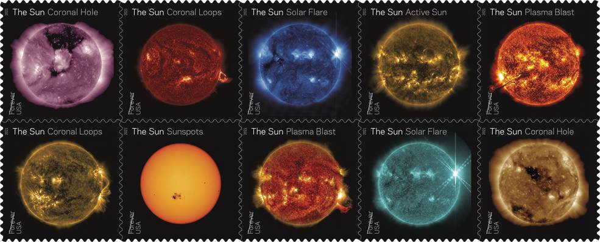

太阳在许多文化中都有许多名字。太阳的拉丁文是“sol”，它是所有与太阳有关的事物的主要形容词：solar。众所周知，太阳是太阳系的绝对主宰。它的质量约为地球的33.3万倍，占太阳系总质量的99.86%。正因为如此，太阳系内所有其他的天体，全都在围绕它旋转。
正因为如此，太阳在天文学中拥有非常特殊的地位。事实上，它是人类除地球以外研究得最多的天体。就以太阳系为例。除地球以外的其他行星，在天文学中都只是一个小小的研究方向。而太阳，本身就是一个完整的研究学科。说得通俗一点，专门写其他行星的书可能只有一两本，而专门写太阳的书则能堆满一个书架。


来源：he U.S. Postal Service issued a set of stamps highlighting views of the Sun from NASA’s Solar Dynamics Observatory on June 18, 2021.
大小和距离
我们的太阳半径为 432,168.6 英里（695,508 公里），并不是一颗特别大的恒星——许多恒星要大几倍——但它仍然比我们的母星质量大得多：332,946 个地球与太阳的质量相匹配。太阳的体积需要 130 万个地球才能填满它。
轨道和旋转
太阳以及围绕它运行的一切事物都位于银河系中。更具体地说，我们的太阳位于从人马座臂向外延伸的称为猎户座支线的旋臂中。从那里，太阳围绕银河系的中心运行，并带来行星、小行星、彗星和其他物体。我们的太阳系以每小时 450,000 英里（每小时 720,000 公里）的平均速度移动。但即使以这样的速度，我们也需要大约 2.3 亿年才能绕银河系完成一个完整的轨道。
太阳在围绕银河系中心运行时自转。它的自转相对于行星轨道平面有 7.25 度的轴向倾斜。由于太阳不是固体，太阳的不同部分以不同的速度旋转。在赤道，太阳大约每 25 天自转一圈，但在两极，太阳每 36 个地球日绕轴自转一次。
太阳在围绕银河系中心运行时自转。它的自转相对于行星轨道平面有 7.25 度的轴向倾斜。由于太阳不是固体，太阳的不同部分以不同的速度旋转。在赤道，太阳大约每 25 天自转一圈，但在两极，太阳每 36 个地球日绕轴自转一次。
星环
太阳没有星环。
气体层
光球层上方是稀薄的色球层和日冕（冠层），它们构成了稀薄的太阳大气层。这是我们看到太阳黑子和太阳耀斑等特征的地方。
来自这些顶部区域的可见光通常太弱而无法在较亮的光球层看到，但是在日全食期间，当月亮覆盖光球层时，色球层看起来像围绕太阳的红色边缘，而日冕形成美丽的白色冠冕等离子流光向外变窄，形成看起来像花瓣的形状。
奇怪的是，太阳大气中的温度随着海拔的升高而升高，高达 350 万华氏度（200 万摄氏度）。50多年来，日冕加热的来源一直是科学之谜。
来自这些顶部区域的可见光通常太弱而无法在较亮的光球层看到，但是在日全食期间，当月亮覆盖光球层时，色球层看起来像围绕太阳的红色边缘，而日冕形成美丽的白色冠冕等离子流光向外变窄，形成看起来像花瓣的形状。
奇怪的是，太阳大气中的温度随着海拔的升高而升高，高达 350 万华氏度（200 万摄氏度）。50多年来，日冕加热的来源一直是科学之谜。
来源：https://zhuanlan.zhihu.com/p/53233164
生命
组成太阳的物质大部分是些普通的气体，其中氢占比最大，氦也较多，还包括少量碳、氦及其他少量金属元素。
来源：https://baijiahao.baidu.com/s?id=1642394209660637944&wfr=spider&for=pc
太阳本身不是一个适合生物生存的地方，因为它含有炽热、高能的气体和等离子体。但是太阳让地球上的生命成为可能，它提供了温暖和能量，植物等生物利用这些能量来形成许多食物链的基础。
关于太阳需要知道的事情
1.最大：如果太阳和一扇典型的前门一样高，那么地球大概只有五分镍币那么大。
2.最大规模：太阳是我们太阳系的中心，占整个太阳系质量的 99.8%
3.不同的旋转：在赤道，太阳大约每 25 天自转一次，但在其两极，太阳每 35 个地球日绕轴自转一次。
4.学习中：许多航天器不断观察太阳，帮助我们密切关注可能影响卫星和宇航员的太空天气。
5.生命能量；没有太阳的强大能量，地球上就没有生命。
6.核聚变：太阳的核心温度约为 2700 万华氏度（1500 万摄氏度）。
太阳的生命
大约 45 亿年前，太阳和太阳系的其他部分由一个巨大的、旋转的气体和尘埃云形成，称为太阳星云。当星云因其压倒性的引力而坍塌时，它旋转得更快并变平成一个圆盘。大部分物质被拉向中心形成我们的太阳，它占整个太阳系质量的 99.8%。
像所有恒星一样，太阳总有一天会耗尽能量。当太阳开始死亡时，它会膨胀得如此之大，以至于它会吞没水星和金星，甚至地球。科学家们预测，太阳的生命还不到一半，在它缩小为白矮星之前还将持续 65 亿年。